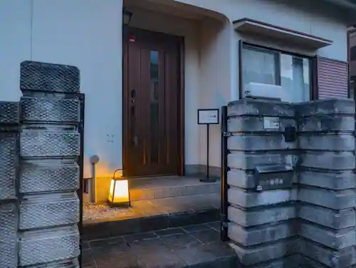
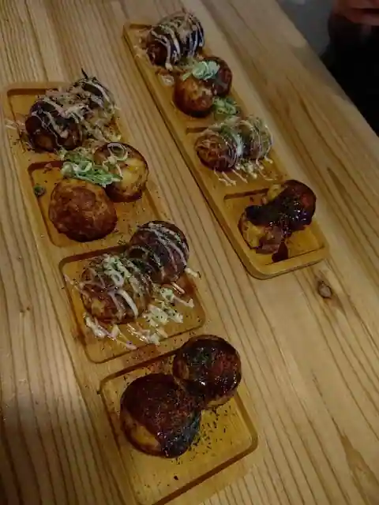
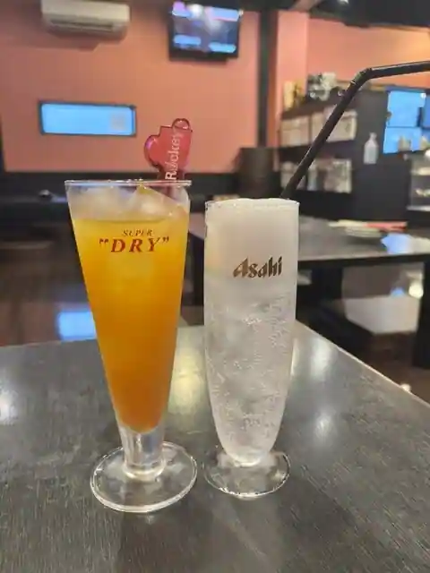
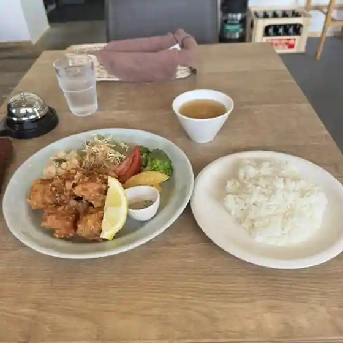
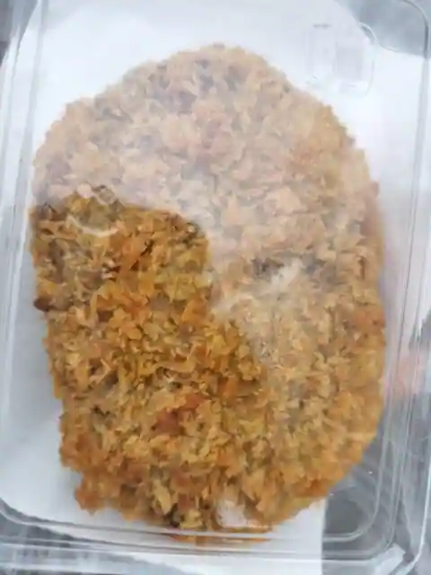
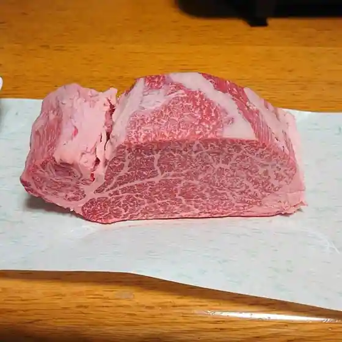
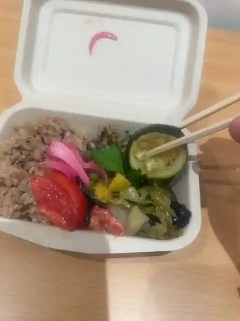

Miyake, Nara: things to do, food and stays
Miyake · Nara
Miyake
Highlighted on the Nara map.

Stay
６３４庵 ＾
634 Iori ^
Dining
ぼちぼちのたこ焼き屋 三宅店

Bochibochinotako Yaki Ya Miyake
おーい中むらくん

Oi Naka Murakun
Cafe&Dining AL

Cafe&Dining AL
はらからキッチン&カフェ
Harakara Kitchen & Cafe
喫茶 みそら屋
Kissa Misora Ya
中尾精肉店

Nakao Seiniku
山口精肉店

Yamaguchi Seiniku
三宅町交流センターMiiMo

Miyake Machi Koryu Center MiiMo